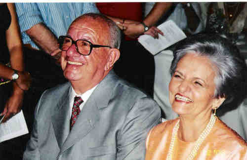
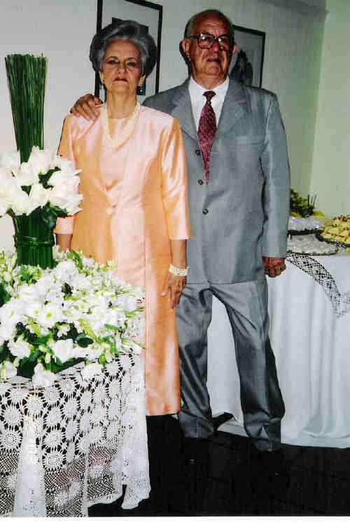
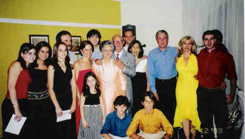

|
Hélio Sérgio Pellegrino (1929-) |
Hélio Sérgio Pellegrino
 • fotos: Hélio e Maria Aparecida.  • fotos: Maria Aparecida e Hélio--bodas de ouro 06-12-2003.  • fotos: Família Maria Aparecida e Hélio Sérgio Pellegrino. Hélio casad[:o::a] Maria Aparecida Martins, filha de Narciso Rodrigues Martins e Júlia Facci. (Maria Aparecida Martins nasceu em em 7 Fev 1933.) |
 Eventos notáveis em Sua vida foram:
Eventos notáveis em Sua vida foram: